Vingt contre un
C'est le 4 novembre. Assez bas dans la fenêtre latérale de ChatGPT, je vois une conversation intitulée « Modèles didactiques dans le monde ». Je me souviens du début septembre. À l'époque, ma préparation de cours avait d'abord donné des briques didactiques, puis une idée de cours, et finalement un concept pédagogique.
Je m'étais alors posé la question de savoir dans quelle mesure cette idée de cabane dans l'arbre était scientifiquement fondée. Ma pensée était à cette époque marquée par un schéma compétitif « meilleur »/« moins bon ». Une certaine ambition s'est développée en moi à partir de là.
Au début, j'ai analysé seulement 20 modèles didactiques européens et regardé quels éléments figuraient déjà dans la cabane dans l'arbre et lesquels manquaient. J'ai complété la cabane dans l'arbre et me suis fait énumérer les modèles suivants. Très vite, cela est devenu international.
Voici à quoi ressemblait une de ces comparaisons entre la cabane dans l'arbre et un modèle didactique :
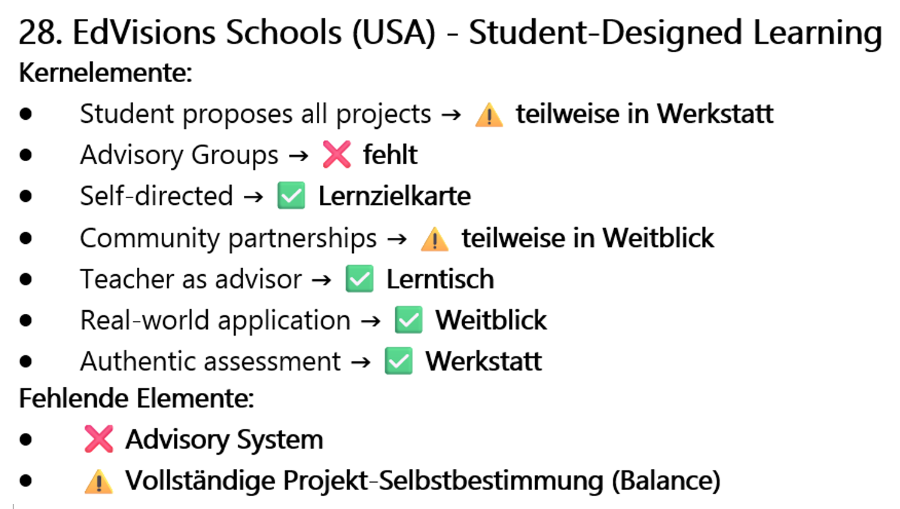
Je ne connaissais pas ce concept didactique. Je ne me suis pas non plus donné le temps de m'y pencher sérieusement, car seuls les « éléments manquants » m'intéressaient.
C'était une course, une chasse à un taux de couverture toujours plus élevé : 65 %, 82 %, 91 %. L'IA me disait : « Ton modèle couvre 85 % des modèles didactiques mondiaux. Si tu ajoutes cet élément-ci ou celui-là, le taux de couverture montera à 88 %. »
C'était une spirale, jusqu'à ce que je réalise un jour : je n'atteindrai jamais 100 %. Ce que j'ai aujourd'hui, ce 4 novembre, devant moi, c'est le procès-verbal de cette chasse – et son abandon. L'effort avait été grand, la désillusion aussi. Mais la prise de conscience était plus grande encore :
J'ai fait affronter ma cabane dans l'arbre au monde entier, et à la fin j'ai dû abandonner. Qu'en reste-t-il ? « Une idée idiote », je le pense aujourd'hui.
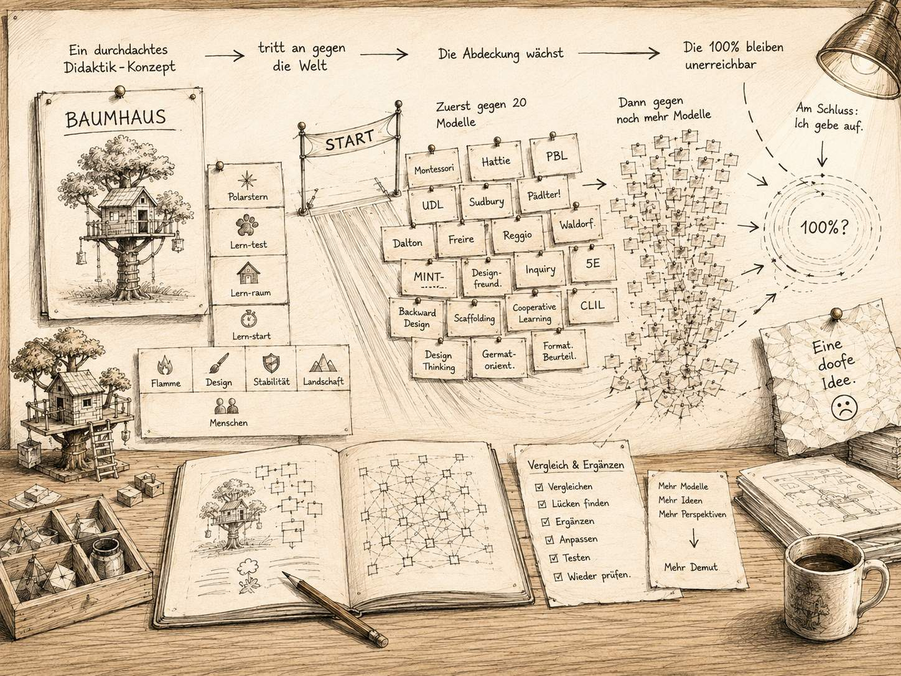
Encore une chasse aux 100 % ?
Je fais défiler cette très longue conversation et je vois les nombreux modèles didactiques et concepts pédagogiques. Je ne veux plus construire le meilleur concept pédagogique. Peu m'importe aussi où se trouve la meilleure école ou comment s'appelle le meilleur enseignant.
Ce qui m'intéresse, c'est ce qui se cache derrière les modèles didactiques : leurs noms, leur origine et surtout leurs éléments individuels. Tout comme j'ai déjà créé des bases de données sur les formats de tâches et les niveaux didactiques, je veux construire une base de données sur les modèles didactiques. Elle doit m'aider plus tard à développer du matériel pédagogique et des planifications de manière ciblée. Sans base de données fiable, l'IA pêche en pleine mer lorsqu'elle génère. Avec les jeux de données appropriés, je lui donne une partie du cadre : quels modèles, quels termes et quels éléments doivent seulement entrer dans la réponse.
J'ouvre le chat et Excel. J'ai rapidement saisi les premiers concepts d'apprentissage dans un tableau, qui s'est ensuite rapidement enrichi d'autres modèles venus d'Europe et du monde anglo-saxon. Je saisis aussi des thèmes de développement scolaire. Ensuite j'enregistre le fichier et je me demande si je ne peux pas simplement confier toute la tâche à Claude : « Crée-moi une bibliothèque complète de tous les modèles didactiques et concepts scolaires du monde entier – sous forme de tableau Excel téléchargeable. »
J'essaie, mais pour Claude, le monde s'arrête après douze modèles. Après ses deuxièmes excuses – et la liste s'arrête à nouveau à douze modèles –, je réalise qu'il doit y avoir une limite sur laquelle je n'ai aucune influence.
Avant d'agrandir encore mon tableau, je veux d'abord le vérifier : la structure du tableau est-elle même cohérente ? Puis-je enregistrer, avec les colonnes existantes, toutes les informations nécessaires ?
Le premier essai échoue
Malheureusement, je me suis posé cette question trop tard.
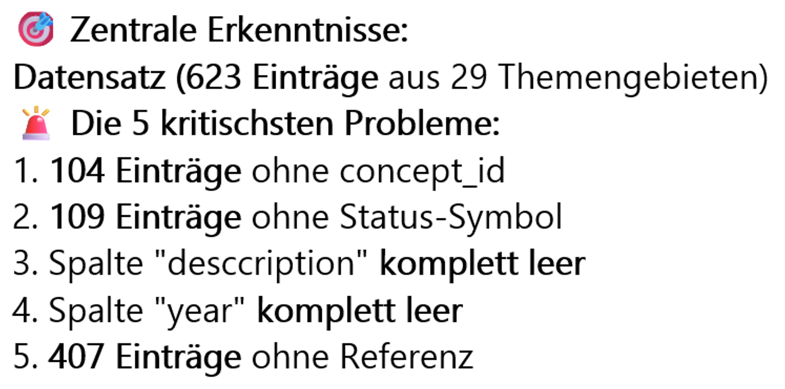
Le résultat est catastrophique. J'ai devant moi un tableau Excel incomplet. Est-ce que je recommence à zéro ou je répare le tableau ? Je choisis de réparer, et je ne commence pas par les entrées individuelles, mais par la structure : les colonnes.
Toi :
D'abord, j'aimerais que tu me donnes un feedback sur les en-têtes de colonnes. Lesquelles supprimerais-tu, renommerais-tu et ajouterais-tu ?
Nous travaillons colonne par colonne sur la structure du futur tableau.
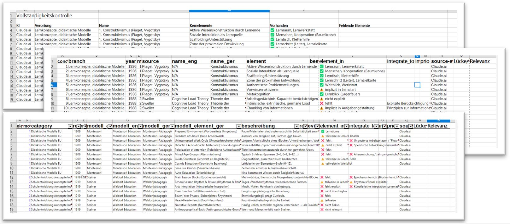
Claude vérifie les 13 colonnes selon leur utilisation réelle. Et c'est ainsi que Claude veut garder des champs comme « concept_id », « branch » et « element », et supprimer des colonnes inutilisées comme « year » et « name_ger ». D'autres sont renommées ou fusionnées.
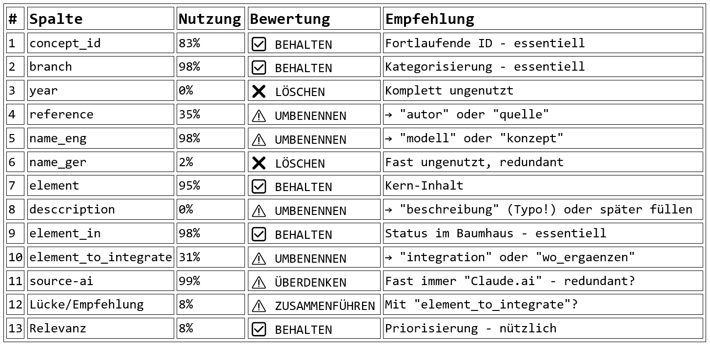
Je pose mon veto. L'année et la désignation allemande restent, même si la désignation anglaise figure à côté. Une autre décision ne se règle pas non plus par une simple suppression ou un renommage : que faire des noms dont la traduction allemande, bien que compréhensible, s'éloigne beaucoup de l'original ?
ChatGPT: NOM ORIGINAL VERSION FRANÇAISE Universal Design for Learning Conception universelle de l'apprentissage Flipped Classroom Classe inversée Response to Intervention Système d'intervention à paliers
En vérifiant, je découvre un autre problème : les modèles didactiques ont rarement une date de naissance unique, ils en ont le plus souvent plusieurs à la fois.
OUTPUT:
Commentaire : le PBL est né à la fin des années 1960 à l'université McMaster ; le terme a été forgé en 1974 par Barrows, l'ouvrage de référence canonique est paru en 1980 (Barrows & Tamblyn). → 1969 plausible comme année d'origine, l'année de référence bibliographique plutôt 1974/1980. (McMaster/Barrows 1980 ; étude historique Schmidt & O'Grady ; synthèse ERIC)
GPT me propose trois possibilités : 1974 pour la création du terme, 1980 pour l'ouvrage de référence – ou les deux années ensemble. Je ne peux pas indiquer les trois années dans le tableau. La colonne demande l'année de publication, donc je me décide pour 1974 : cette année-là, Victor Neufeld et Howard Barrows publient leur article sur la « McMaster Philosophy ». La pratique curriculaire à l'université McMaster commence déjà en 1969.
Je relis le commentaire sur le Problem-Based Learning et je ne peux m'empêcher de sourire : « né à la fin des années 1960 ». À écouter certains acteurs du monde éducatif, on croirait qu'il s'agit d'une invention toute récente. Ce n'est pas la seule fois que cette pensée me vient en lisant une fiche didactique. Et ce ne sera pas la dernière fois qu'une date fait paraître une idée soi-disant nouvelle bien plus ancienne qu'on ne le pense.
Ronde après ronde, au-delà de l'Europe
Trois jours plus tard, la structure des colonnes est fixée et les données sont assez « réparées » pour que je puisse continuer à construire. Claude doit élaborer une règle pour cela et me livrer les résultats de manière à ce que je puisse les copier directement dans mon tableau.
Toi :
Oui, crée-moi un tableau copier-coller pour les colonnes A à G. Règle : les colonnes A et B restent identiques. La colonne C, tu continues la numérotation, afin que chaque concept ait son propre numéro. La colonne F, tu ne la remplis que si c'est un concept américain/anglais. La colonne G (allemand), tu peux la remplir dans tous les cas ; soit comme nom original, soit comme traduction du titre original anglais.
Claude propose un fichier dit TSV. Je n'ai aucune idée de ce qu'est un fichier TSV, mais j'accepte. Il crée un tel tableau et je constate qu'à la ligne 1, la numérotation manque. Ensuite, je trouve des années manquantes, et un numéro de modèle apparaît plusieurs fois parce que « Konstruktivismus » avec une espace à la fin n'apparaît pas dans le mapping.
Après quelques boucles de correction – et juste avant d'abandonner – ça fonctionne. Claude me fournit un bloc propre que je peux insérer directement dans Excel.
À partir de là, c'est devenu automatique : tour après tour, j'intègre les données dans Excel ; d'abord DACH, puis GB/USA, puis à l'international. Voici à quoi ressemble un tel bloc TSV – prêt pour le passage direct vers Excel :
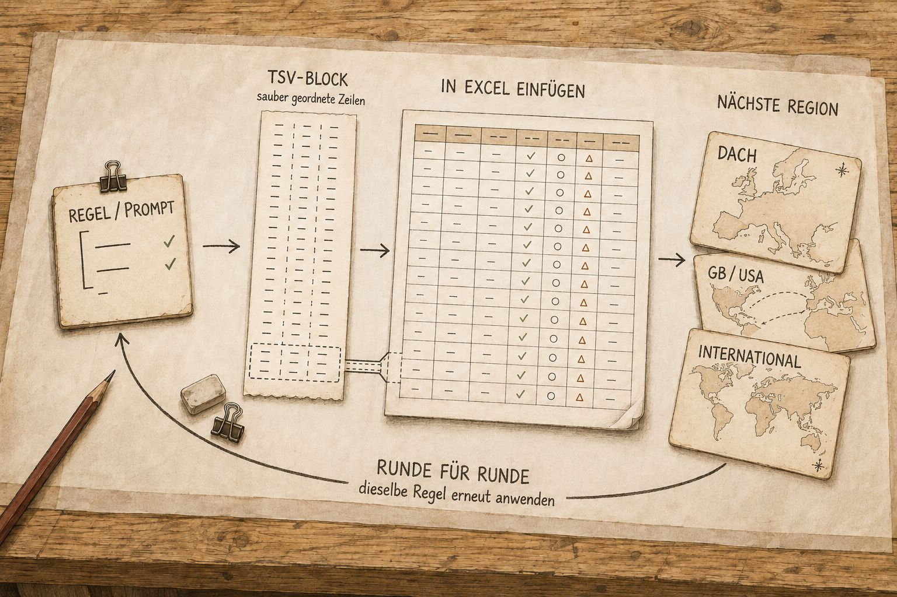
623 lignes plus tard : un prompt d'entrée pour le prochain chat
Ce sont les 70 modèles didactiques, concepts et thèmes de développement scolaire de septembre. Ils comprennent 623 éléments individuels dans la liste Excel. Ça paraît beaucoup, et ça l'est. Je veux quand même continuer, et Claude a déjà un plan :
Claude: 📋 DÉROULEMENT RECOMMANDÉ : Tour 1 : Asie (25 concepts) Tour 2 : Océanie (15 concepts) Tour 3 : Scandinavie (15 concepts) Tour 4 : Amérique latine (10 concepts) Tour 5 : Qualité de l'enseignement (10 concepts) Tour 6 : Théories de l'apprentissage (10 concepts) Tour 7 : Historiques (10 concepts) → ~95 nouveaux concepts
Mais le chat est devenu trop long. J'en ai besoin d'un nouveau et je demande à Claude d'écrire un prompt de démarrage pour cela.
Toi :
Lis ce chat. Je veux enrichir mon tableau Excel avec d'autres modèles didactiques, psychopédagogiques, pédagogiques, mais aussi des thèmes de développement de l'enseignement ou quelque chose sur la qualité de l'enseignement. Dans le monde entier. J'ai besoin d'un prompt de démarrage que je pourrai utiliser dans un nouveau chat et où les données seront restituées dans l'ordre des colonnes, afin que je n'aie plus qu'à faire du copier-coller. Ton rôle ? Fais-moi une proposition.
C'est probablement la première fois que je me fais rédiger par une IA un prompt de démarrage aussi précis. Plus tard, j'appellerai ces transmissions entre chats des «prompts-passerelles».
Claude ne crée pas seulement le prompt de démarrage, mais aussi un mode d'emploi avec un rôle, un déroulement et un contrôle qualité. Il résume aussi brièvement :
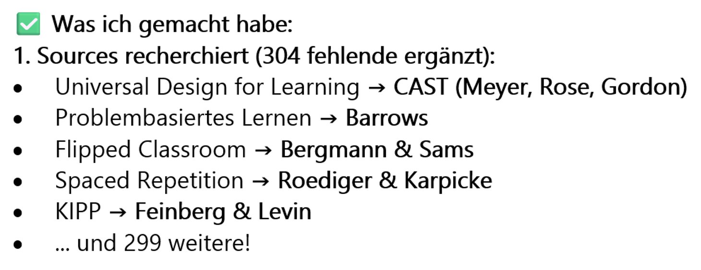
Son bilan m'impressionne : 304 sources manquantes recherchées. Cinq exemples sont listés, puis seulement : «… et 299 autres.» Qui pourrait faire ça ? Quelle autre technologie pourrait examiner pour moi un tableau de plus de 500 lignes, repérer les lacunes et, surtout, poursuivre ma tâche de manière autonome ? Je n'en connais aucune.
Mais autre chose me devient clair : avant de continuer à collecter, je dois vérifier ce qui figure déjà dans le tableau. Je me demande : qui contrôle en fait si tout cela est exact ?
Maintenant, c'est la vérification qui compte, pas la recherche
Je passe de Claude à GPT, je charge le tableau Excel et lui demande de contrôler l'exactitude des 520 premières lignes.
Toi :
Contrôle les lignes 2 à 520 et les colonnes A à G pour leur cohérence et leur exactitude.
Pour GPT, l'exactitude signifie d'abord autre chose que pour moi : valeurs manquantes, doublons, espaces et orthographes non uniformes. Mais une autre question me préoccupe : les contenus que Claude a inscrits dans le tableau sont-ils aussi exacts ? Je formule la consigne plus précisément.
Toi :
Trouve toutes les lignes des concepts 1 et 2 (colonne B). Vérifie l'exactitude des colonnes C à G (recherche sur internet). Si tu n'es pas sûr : marque d'une étoile. Vérifie les éléments dans la colonne H. Sont-ils complets et exacts ?
GPT doit vérifier chaque concept sur internet, marquer les incertitudes et présenter les résultats de façon à ce que je puisse les reprendre dans Excel. Il travaille le tableau concept par concept – et comme Montessori y porte le numéro 1, la vérification commence par Maria Montessori.
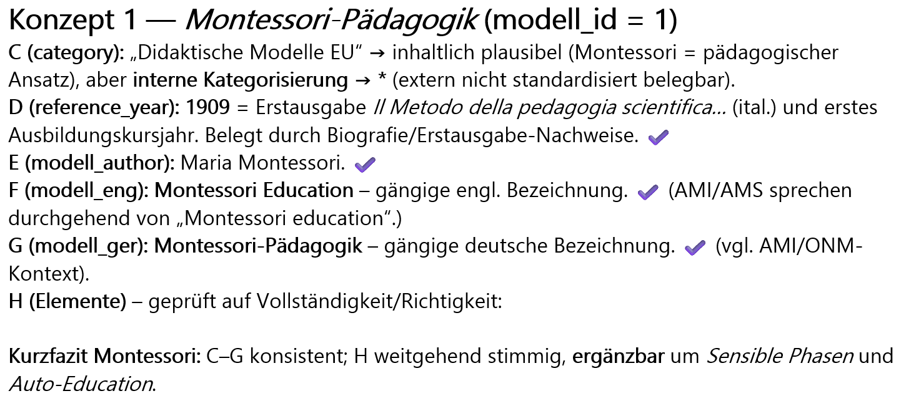
Ainsi, je vois d'un coup d'œil si tout est correct et ce qu'il faudrait compléter. Mais ce résultat se transpose difficilement dans ma liste Excel. Je demande à GPT une présentation que je puisse copier :
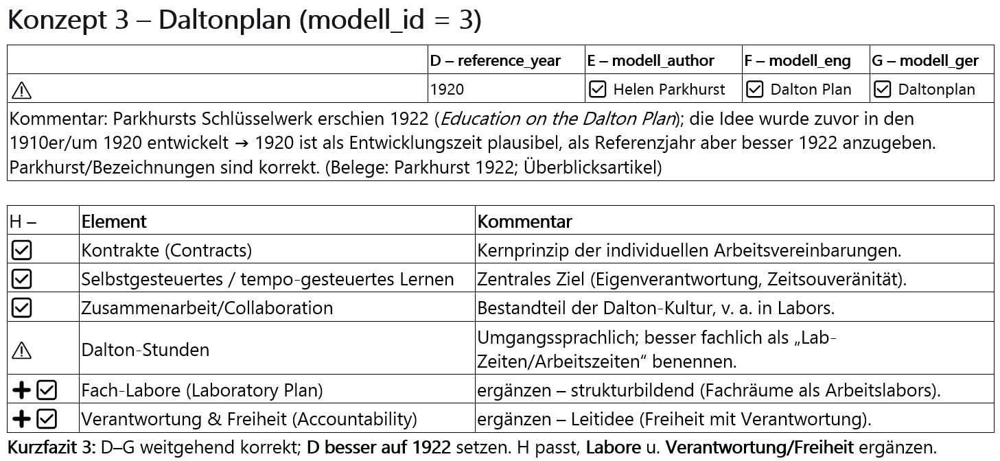
Ensuite, je continue concept par concept et je vérifie en même temps les éléments manquants ou non attribués. Mais soudain, GPT se met à commenter les concepts :
OUTPUT:
Concept 15 – Modèle de Berlin et de Hambourg (Heimann/Schulz/Otto) Le modèle de Berlin (années 1960) structure la planification de l'enseignement à travers des champs de conditions et de décisions ; le modèle de Hambourg précise et élargit cette perspective. Il est considéré comme un cadre analytique de planification (et non comme un programme de méthodes), et a marqué la didactique germanophone pendant des décennies.
Pour GPT, ce sont des lignes de contexte : une note ultra-courte, qui situe historiquement. J'aime les lire, et parfois elles suscitent chez moi des questions :
Toi :
[…] au fait : comment arrives-tu à «Rosenshine a condensé des pratiques fondées sur des preuves concernant l'instruction explicite dans ses Principles of Instruction (2010/2012)» ? Rosenshine n'était-il pas déjà mort depuis longtemps ?
ChatGPT: Réfléchi pendant 15s […] Au sujet de Rosenshine : Non, il n'était pas encore décédé en 2012. Barak Rosenshine a vécu jusqu'au 22 mai 2017. Son fameux aperçu «Principles of Instruction: Research-Based Strategies That All Teachers Should Know» est paru au printemps 2012 dans American Educator. Il existe en outre un pamphlet IAE de 2010 avec une compilation similaire (10 principes).
Oui, parfois on peut se tromper.
Du va-et-vient naît un masterprompt
Des boucles de correction émerge peu à peu quelque chose de nouveau : pas seulement une meilleure réponse, mais un modèle réutilisable. Je n'ai plus besoin d'expliquer à GPT, pour chaque concept, quelles colonnes vérifier, comment marquer l'incertitude et sous quelle forme restituer le résultat. Ces règles se trouvent maintenant dans le masterprompt. Il ne me reste plus qu'à décider ce que GPT doit faire : vérifier sur internet les entrées existantes, ou chercher des modèles et des éléments qui manquent encore dans le tableau. Le masterprompt reçoit ses propres versions, un guide, un README et même un changelog. Les deux modes s'appellent : Compléter et Vérifier.
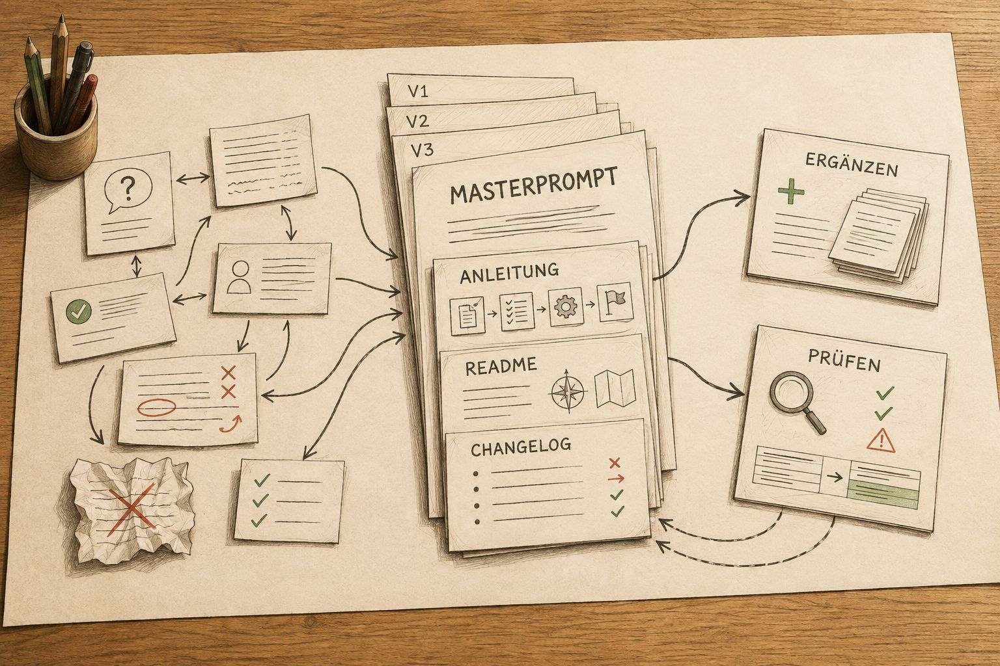
Le saut
Quelques tours plus tard, je tombe sur un autre concept dont j'avais déjà entendu parler :
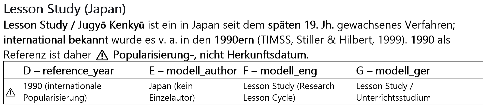
Ce n'est pas le concept qui me surprend, mais la mention «Japon». Ma propre réaction me surprend encore plus : ai-je vraiment eu l'impression qu'il n'existait des modèles didactiques qu'en Europe et aux États-Unis ? Je dois honnêtement l'admettre : je ne m'étais jamais posé la question – jusqu'à maintenant.
« Japon ? », je demande. « Quels modèles didactiques existe-t-il là-bas ? » Cette question ne m'ouvre pas seulement une porte vers un autre pays, mais vers le monde entier. Je suis enseignant depuis presque 30 ans et je ne m'étais jamais demandé comment un enseignant enseigne au Japon, au Brésil ou en Namibie.
Dans mes recherches, j'avais inclus l'Allemagne et l'Autriche, mais complètement oublié l'Italie et la France. Plutôt que de continuer à chercher là, je saute directement vers l'Asie : « Donne-moi 25 concepts d'Asie. »
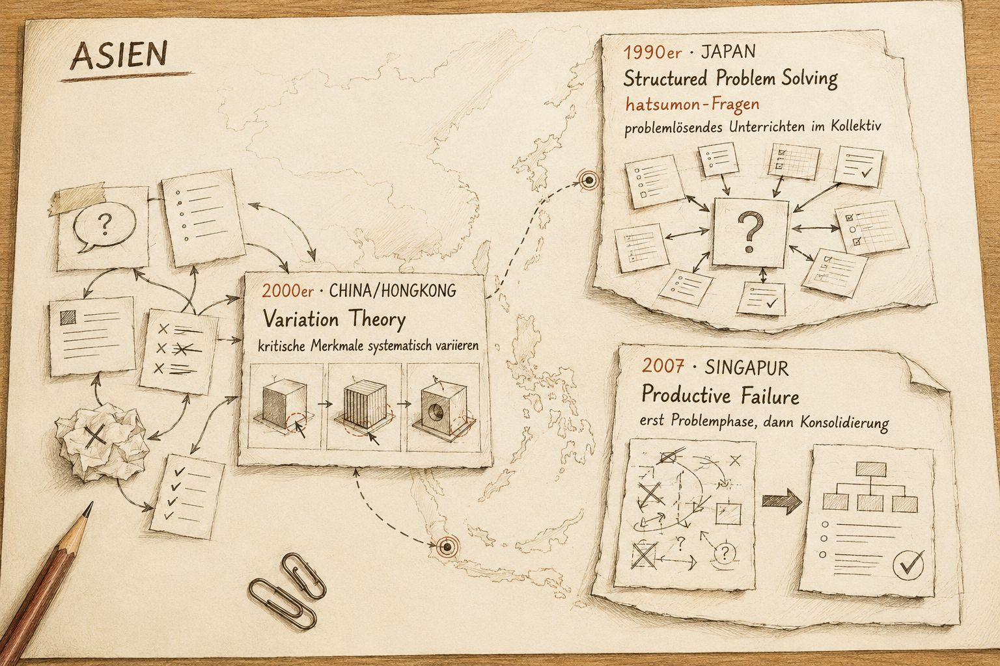
Je me plonge dans le concept japonais de la Lesson Study et découvre comment des enseignants font d'une seule leçon l'objet commun de leur travail. Ils conçoivent ensemble une unique leçon, l'observent en direct, puis la décortiquent ensemble. Il en résulte une amélioration collective plutôt qu'un travail en solitaire. Et moi ? Je suis assis seul devant mon écran, à collectionner des modèles didactiques.
Presque à chaque modèle ou concept didactique, les dates me rattrapent : fin du XIXe siècle, les années 2000, 2007. Rien de tout cela n'est nouveau. C'était seulement inconnu pour moi jusqu'ici.
La liste devient une carte du monde
Et j'envoie GPT à la recherche de modèles didactiques venus d'Afrique.
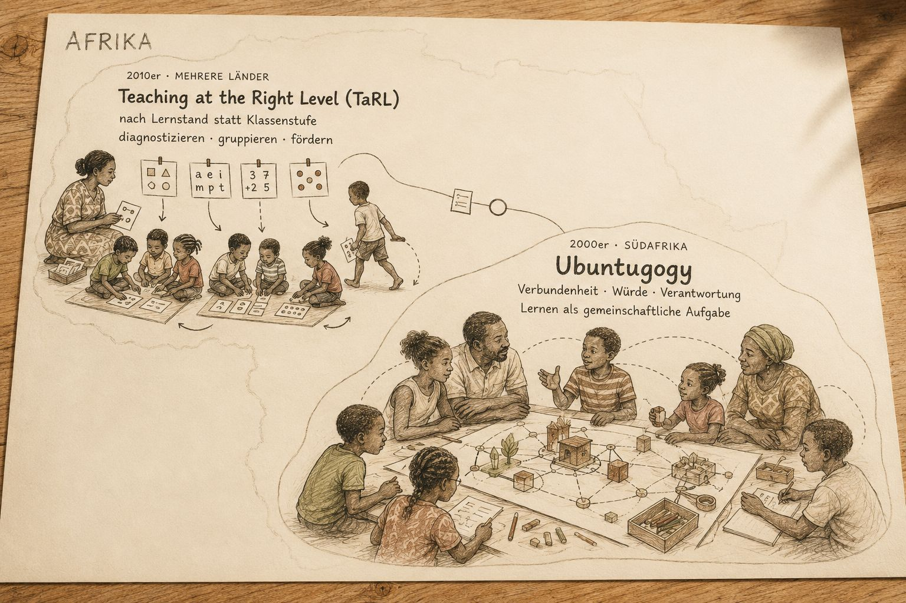
Le TaRL ne commence ni par l'âge ni par le niveau scolaire, mais par le niveau d'apprentissage réel des enfants. L'Ubuntugogy déplace le regard de la performance individuelle vers le lien social, la dignité et la responsabilité mutuelle. L'un est une méthode de soutien scalable, l'autre plutôt un principe pédagogique directeur. Ces deux perspectives m'éloignent beaucoup de ce par quoi ma recherche avait commencé début septembre : j'avais fait affronter ma cabane dans l'arbre au monde entier.
Et l'Ubuntugogy ? – ne se demande même pas qui gagne.
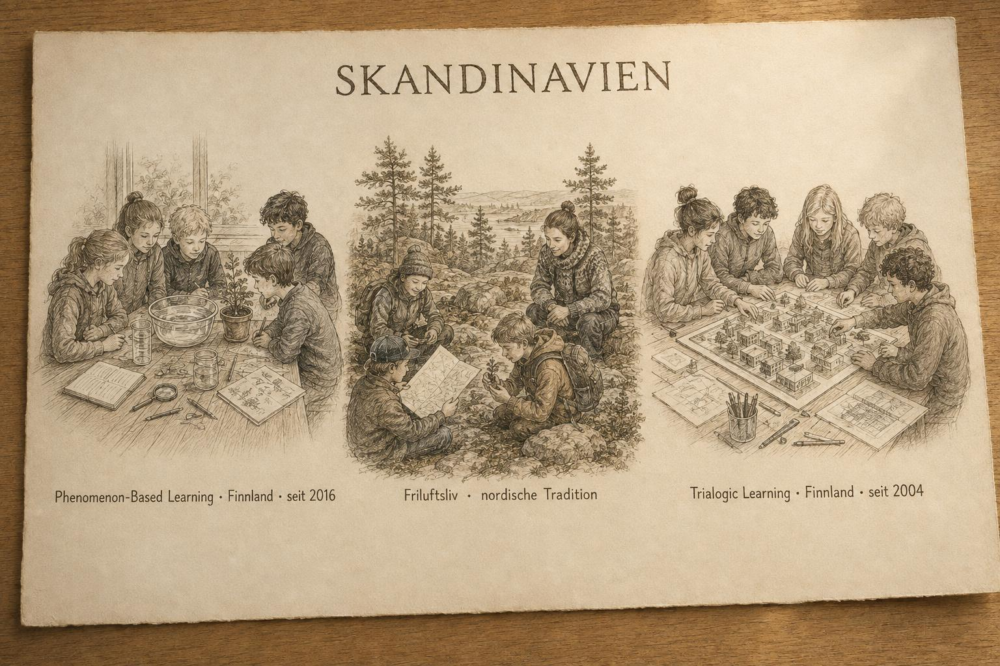
Scandinavie : Finlande et Suède – complètement oubliées lors de mon premier passage. Je lis sur le Phenomenon-Based Learning, où l'on travaille temporairement de manière transdisciplinaire sur un phénomène commun. Sur le Friluftsliv, qui déplace l'apprentissage en extérieur. Et sur le Trialogic Learning, où le savoir prend forme dans quelque chose créé ensemble : un modèle, une esquisse ou un document.
Je n'écris pas ces lignes parce que je le sais, mais parce que je le découvre pour la première fois. Comment aurais-je pu chercher un livre dont j'ignorais l'existence ?
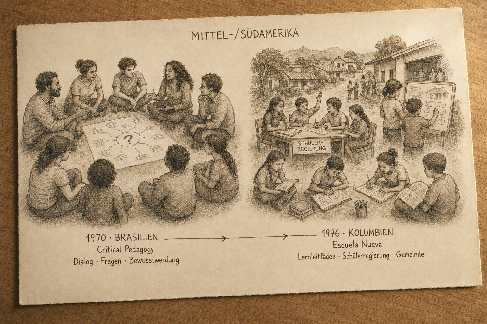
Amérique centrale et du Sud : au Brésil, je tombe sur Paulo Freire. Depuis plus d'un demi-siècle, la même idée – questionner plutôt que déposer du savoir. L'éducation ne doit pas seulement remplir les gens de contenu, mais les aider à comprendre leur réalité et à en parler ensemble.
Dans la Colombie voisine, la participation devient très concrète : l'Escuela Nueva associe des écoles rurales à classes multi-âges avec des guides d'apprentissage, un gouvernement d'élèves et de véritables tâches issues de la communauté. Deux approches différentes – mais toutes deux traitent les apprenants non comme des destinataires, mais comme des acteurs.
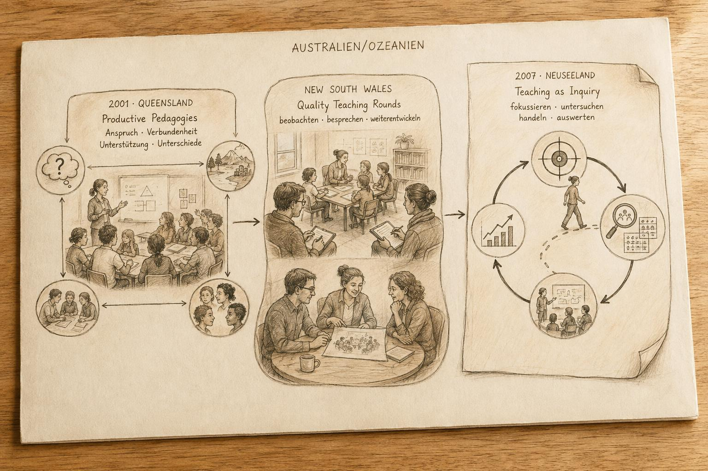
Australie et Nouvelle-Zélande : je pense d'abord avoir oublié cette région. Puis je vérifie – « Tour 2 : Océanie » figure déjà dans le tableau depuis longtemps.
Dans le Queensland, je tombe sur les Productive Pedagogies et donc sur la question de ce qui fait réellement un bon enseignement. En Nouvelle-Galles du Sud, les enseignants s'observent mutuellement en classe et font évoluer leur pratique ensemble dans des Quality Teaching Rounds. Le Teaching as Inquiry néo-zélandais en fait un cycle : cibler, examiner, agir, évaluer. Avec chaque région, mon tableau grandit. Et avec chaque région, l'idée que je pourrais un jour le rendre complet rétrécit.
Ce qui reste de la liste
Le 11 décembre 2025, j'arrive à la ligne 1465. La base de données a encore besoin d'un nettoyage. Mais pour le moment, je m'arrête.
Je m'arrête – pas parce que j'ai terminé, mais parce que d'autres choses deviennent plus importantes.
Je fais défiler la liste. Nom après nom, année après année, pays après pays. Pendant de longues minutes. Quelque part entre la ligne 800 et la ligne 1200, je réalise à quel point mon microcosme didactique était étroit jusqu'ici. Je savais que je savais peu. Maintenant, je le vois devant moi. Ce qui a commencé comme une chasse à l'exhaustivité cède la place à autre chose : l'humilité et le respect.
Quand des gens présentent leur modèle didactique comme le seul juste ou le meilleur, j'écoute aujourd'hui différemment. Ce modèle aussi, je me dis, est une réponse possible à la question de comment les enfants peuvent apprendre. Une parmi des centaines – et je ne connais encore que celles que j'ai rassemblées jusqu'à aujourd'hui.
Et puis je le reconnais – un déjà-vu : début septembre, c'était avec la cabane dans l'arbre une course contre une limite inatteignable. Et maintenant je recommence – plus grand, et avec le monde entier. La couverture augmente, et les 100 % resteront toujours hors de portée.
Sur mon PC se trouve maintenant ce fichier avec tous ces modèles didactiques, et il porte le nom « C11xx_14_MODELLE_WELT_V5.0_251211.xlsx ». Un fichier, je peux le supprimer ou l'archiver. Mais cette incroyable diversité de modèles, de concepts et d'idées directrices dans ma tête, non.
Trois exemples restent gravés en moi : Jugyō Kenkyū (« Lesson Study ») du Japon, l'Ubuntugogy d'Afrique et la « Pédagogie des opprimés » de Paulo Freire, du Brésil.
Et je me demande : le modèle japonais est-il apparenté à celui du Brésil ? L'un de ces concepts est-il la réponse à une question qui se pose dans ma salle de classe ? Ou une réponse ne naît-elle peut-être que d'une combinaison ?
Quelque chose s'est déplacé en moi.
Pour moi, ce sont trois points de départ totalement différents, et pourtant ils tournent tous autour d'une question similaire : comment les enfants et les jeunes peuvent-ils apprendre et grandir ? Peut-être sommes-nous plus proches sur ce point que mon regard européen ne le laissait supposer jusqu'ici. Et une chose devient claire pour moi :
Combien de personnes sur cette terre cherchent une bonne école pour nos enfants.
Et cela, c'est quelque chose d'incroyablement beau.